|
|
| hard corals text index | photo index |
| Phylum Cnidaria > Class Anthozoa > Subclass Zoantharia/Hexacorallia > Order Scleractinia > Family Dendrophyllidae > Turbinaria sp. |
| Flowery
disk coral Turbinaria peltata Family Dendrophylliidae updated Sep 2025 Where seen? This hard coral that forms thick plates with large fat polyps can grow in murky water. So it is among the most commonly encountered hard corals in the South, and is even seen on our Northern shores. Features: Colonies up to 20-50cm, elsewhere said to reach several metres across. Colony may be plates, thick (about 1cm) with polyps only on one side of the plate, or columns with polyps on both sides. With the large polyps slightly expanded, the colony looks like a flower-studded disk. When fully expanded, the polyps may completely cover the 'bare' parts betweeen them so the colony appears 'furry'. Colony may be flat and disk-shaped, sometimes folded thus resembling a cabbage, or with columns growing from the centre. |
 Sentosa, Jun 07 |
 |
 |
| Corallites largest of the disk corals (average 0.6cm), crowded at
the edges but spaced apart elsewhere with a smooth surface in between
them. When the tissue is completely retracted, the corallite may look
like a shallow sunken cup, sometimes short tubes. The polyps are large
(1-1.5cm in diameter), fleshy with a thick body column, many opaque
long tentacles, and are usually colourful. Because the polyps are
usually widely spaced apart, they often look like small anemones with
a distinctive ring of tentacles surrounding a central mouth. Unlike
other Turbinaria species, the polyps are often expanded even
during the day. Colony colour usually overall grey or brown but often with several different muted colours displayed on one colony. For example, the polyps may have a contrasting colour against a duller background plate colour. Colours seen include various shades and combinations of orange, brown, yellow, green, blue and purple. Status: As at 2024 it is listed as Least Concern in Singapore. |
|
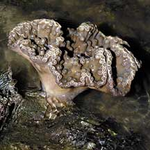 Small colony. Sentosa, May 07 |
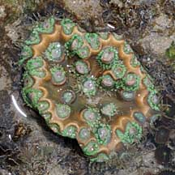 Small colony. Cyrene Reef, Jun 08 |
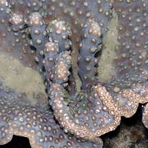 Columns in the centre of the disk. St John's Island, Jan 06 |
*Species are difficult to positively identify without close examination.
On this website, they are grouped by external features for convenience of display.
| Flowery disk corals on Singapore shores |
On wildsingapore
flickr
|
| Other sightings on Singapore shores |
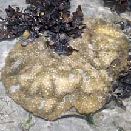 Pulau Senang, Aug 10 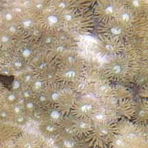 Bleaching. |
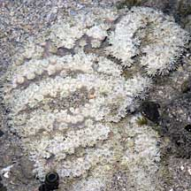 Pulau Berkas, May 10 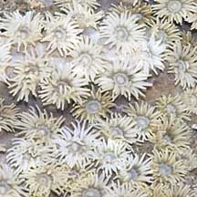 Bleaching. |
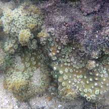 Terumbu Buran, Nov 10 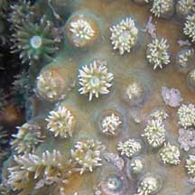 |
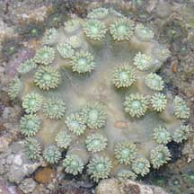 Pulau Biola, Dec 09 |
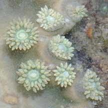 |
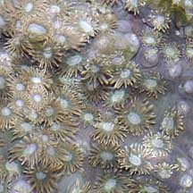 Terumbu Salu, Jan 10 |
|
Links
References
|